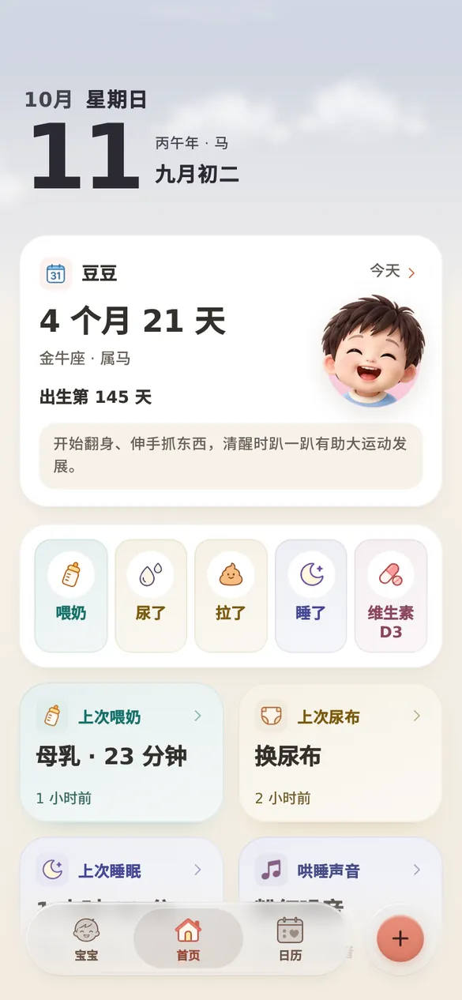

原「宝妈助手」· 已搬到新家
咿呀记从孕期到育儿，一本温柔的记录
喂奶、睡眠、尿布、成长、疫苗、第一次翻身……单手就能记下。不用注册，打开就能用，记录只留在你自己的手机里。
打开咿呀记
新地址 yiya.help · 免费使用
这台设备上还有旧记录
你在旧版「宝妈助手」里的记录还保存在这个浏览器中。先下载一份备份文件，再到 咿呀记 → 设置 → 导入备份 选这个文件，就能接着用。文件只存到你的手机，不会上传。

一站式
孕期到育儿，记在一个地方
常用的放在首页，一下就能记；不常用的收起来，不打扰。
喂奶
亲喂计时分左右，瓶喂记奶量，吸奶、辅食也能记。
睡眠
一键开始和结束，忘了点也能补记，看得到一天的作息。
尿布
尿了、拉了各一下，便便性状、红屁屁都有地方写。
成长
身高、体重、头围画成曲线，长得怎么样一眼看清。
疫苗与儿保
按月龄排好计划，快到了提醒，打完一键勾掉。
里程碑
第一次笑、翻身、叫妈妈，配上照片留下来。
孕期
孕周、产检、胎动和宫缩计时，还有待产包清单。
体温与用药
发烧吃药有记录，看医生时把摘要直接给医生看。
我们的坚持
你的记录，只属于你
不用注册，不看你的记录。记了多少年，都能完整带走。
离线可用
加到主屏后像 App 一样打开，没网也能照常记。
数据只在自己手机里
记录存在你的设备上，没有账号，也不拿去做分析。
导出永远免费
随时导出完整备份，换手机、换浏览器都能恢复。
家庭共享
邀请爸爸、外婆一起记，谁喂过奶、谁换过尿布都清楚，每台手机上各有一份。